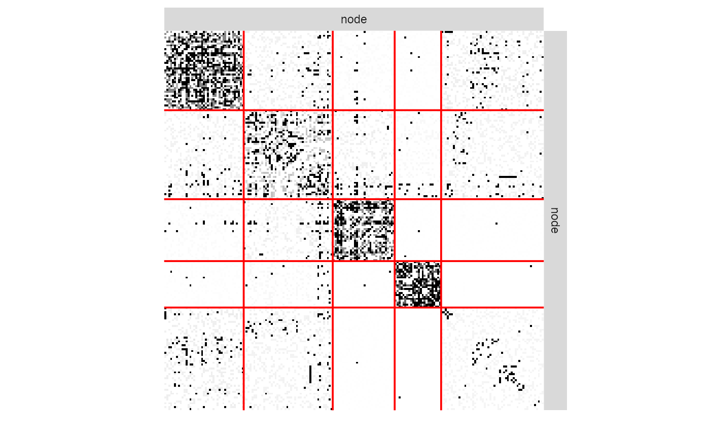

R/R6Class-missSBM_fit.R
missSBM_fit.RdThe function estimateMissSBM() fits a collection of SBM for varying number of block.
Each fitted SBM is an instance of an R6 object with class missSBM_fit, described here.
Fields are accessed via active binding and cannot be changed by the user.
This class comes with a set of R6 methods, some of them being useful for the user and exported
as S3 methods. See the documentation for show(), print(), fitted(), predict(), plot().
fittedSBMthe fitted SBM with class SimpleSBM_fit_missSBM, inheriting from class sbm::SimpleSBM_fit
fittedSamplingthe fitted sampling, inheriting from class networkSampling and corresponding fits
imputedNetworkThe network data as a matrix with NAs values imputed with the current model
monitoringa list carrying information about the optimization process
entropyImputedthe entropy of the distribution of the imputed dyads
entropythe entropy due to the distribution of the imputed dyads and of the clustering
vExpecdouble: variational expectation of the complete log-likelihood
penaltydouble, value of the penalty term in ICL
loglikdouble: approximation of the log-likelihood (variational lower bound) reached
ICLdouble: value of the integrated classification log-likelihood
new()constructor for networkSampling
missSBM_fit$new(partlyObservedNet, nbBlocks, netSampling, clusterInit, useCov)
partlyObservedNetAn object with class partlyObservedNetwork.
nbBlocksinteger, the number of blocks in the SBM
netSamplingThe sampling design for the modelling of missing data: MAR designs ("dyad", "node") and NMAR designs ("double-standard", "block-dyad", "block-node" ,"degree")
clusterInitInitial clustering: either a character in "hierarchical", "spectral" or "kmeans", or a vector with size ncol(adjacencyMatrix), providing a user-defined clustering with nbBlocks levels. Default is "hierarchical".
useCovlogical. If covariates are present in partlyObservedNet, should they be used for the inference or of the network sampling design, or just for the SBM inference? default is TRUE.
doVEM()a method to perform inference of the current missSBM fit with variational EM
missSBM_fit$doVEM( control = list(threshold = 0.001, maxIter = 100, fixPointIter = 5, trace = 1) )
controla list of parameters controlling the variational EM algorithm. See details of function estimateMissSBM()
show()show method for missSBM_fit
missSBM_fit$show()
print()User friendly print method
missSBM_fit$print()
clone()The objects of this class are cloneable with this method.
missSBM_fit$clone(deep = FALSE)
deepWhether to make a deep clone.
## Sample 75% of dyads in French political Blogosphere's network data adjMatrix <- missSBM::frenchblog2007 %>% igraph::as_adj (sparse = FALSE) %>% missSBM::observeNetwork(sampling = "dyad", parameters = 0.25) collection <- estimateMissSBM(adjMatrix, 3:5, sampling = "dyad")#> #> #> Adjusting Variational EM for Stochastic Block Model #> #> Imputation assumes a 'dyad' network-sampling process #> #> Initialization of model with 3 blocks. Initialization of model with 4 blocks. Initialization of model with 5 blocks. #> Performing VEM inference for model with 3 blocks. Performing VEM inference for model with 4 blocks. Performing VEM inference for model with 5 blocks.#> [1] "missSBM_fit" "R6"